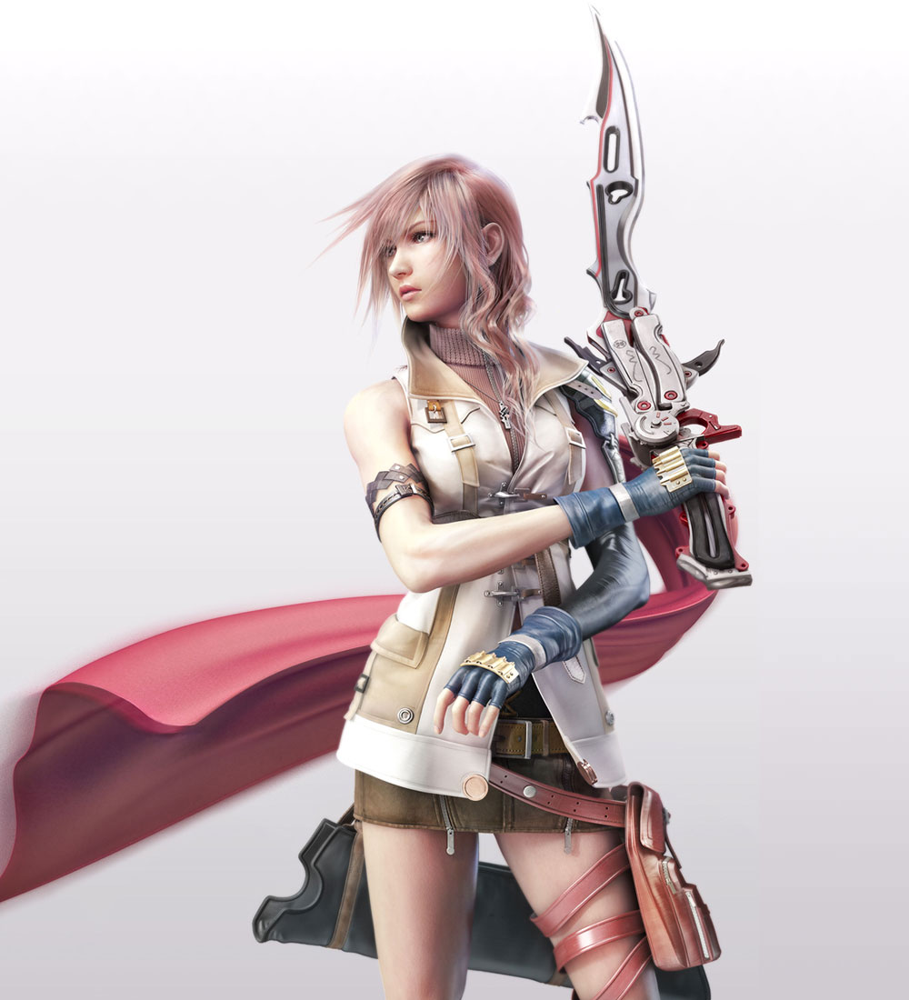
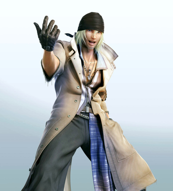
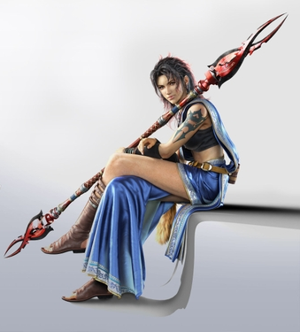

|  | Name: | Lightning (Claire Farron) |
| Weapon: | Blazefire Saber gunblade | |
| Ultimate Weapon: | Omega Weapon | |
| Eidolon (Summon Beasts): | Odin | |
| Height: | 5' 7" (171 cm) | |
| Home: | Bodhum; Valhalla; Nova Chrysalia | |
| Primary Roles: | Commando, Ravager, Medic | |
| Exclusive Skill: | Army Of One | |
|
The main character of the game. Lightning is a tough young woman previously associated with the Cocoon Guardian Corps. She is given the task to fulfill her "focus" after becoming a l'Cie. The two yellow stripes on the her left shoulder symbolize her Rank in the Guardian Corps. Lightning has long light pink hair and is 178 cm (70.1 inches) tall. |
||
| Name: | Snow Villiers |  |
| Weapon: | Wild Bear (Coat Emblem) | |
| Ultimate Weapon: | Save the Queen | |
| Eidolon (Summon Beasts): | Shiva Sisters | |
| Height: | 6' 7" (200 cm) | |
| Home: | Bodhum; New Bodhum; Yusnaan | |
| Primary Roles: | Commando, Ravager, Sentinel | |
| Exclusive Skill: | Sovereign Fist | |
|
Snow Villiers– A huge, blond, beanie-wearing male who fights with his fists and is augmented by changing his trench coat and is the leader of the rebel group Team NORA. He controls the Eidolon Shiva Sisters, who can turn into a motorcycle in their Gestalt mode. He refers to himself as "The Hero" and is determined to save his future wife, Serah. He is voiced by Troy Baker in the English version and by Daisuke Ono in the Japanese version. An interesting fact is the makers of Final Fantasy XIII referred to him as Mr. 33cm, due to his shoe size, the idea behind his character design was that he could carry two people and still run. |
||
| Name: | Hope Estheim | |
| Weapon: | Airwing (Boomerang) | |
| Ultimate Weapon: | Nue | |
| Eidolon (Summon Beasts): | Alexander | |
| Height: | 5' 0" (153 cm) | |
| Home: | Palumpolum; Academia; Nova Chrysalia | |
| Primary Roles: | Ravager, Synergist, Medic | |
| Exclusive Skill: | Last Resort | |
|
Hope Estheim – A young teenager who lost his mother during the purge, who becomes entangled in the battle against the sanctum with the rest of the gang. His mother who fought alongside Snow, ultimately ends up dead, causing Hope to blame Snow for her death. |
||
| Name: | Sazh Katzroy | |
| Weapon: | Vega 42s (Two pistols) | |
| Ultimate Weapon: | Total Eclipses | |
| Eidolon (Summon Beasts): | Brynhildr | |
| Height: | 6' 2" (189 cm) | |
| Home: | Unknown | |
| Primary Roles: | Commando, Ravager, Synergist | |
| Exclusive Skill: | Cold Blood | |
|
Sazh Katzroy – A middle-aged man who unwittingly becomes entangled in Lightning's plot early on in the game. Sazh wields dual pistols and has a baby Chocobo as a pet which lives in his Afro. He carries a jaded attitude and claims that he is "too old for this stuff," but remains loyal to his allies regardless. Being the elder of the group he feels it is necessary to keep the "children" (other party members) safe. He is voiced by Reno Wilson in the English version and Masashi Ebara in the Japanese version. |
||
| Name: | Oerba Dia Vanille | |
| Weapon: | Binding Rod | |
| Ultimate Weapon: | Nirvana | |
| Eidolon (Summon Beasts): | Hecatoncheir | |
| Height: | 5' 3" (161 cm) | |
| Home: | Oerba, Luxerion | |
| Primary Roles: | Ravager, Saboteur, Medic | |
| Exclusive Skill: | Death | |
|
Oerba Dia Vanille – A bubbly, young girl who was originally sent away during the Purge, but was saved because of Team NORA. She takes a big sister type of role to Hope. Her weapons resemble different types of staffs, yet transforms into a four-pronged fishing rod during battle. She is voiced by Georgia van Cuylenburg in the English version and by Yukari Fukui in the Japanese version. She also serves as the game's narrator during certain points to the story. |
||
| Name: | Oerba Yun Fang |  |
| Weapon: | Bladed Lance (Spear) | |
| Ultimate Weapon: | Kain's Lance | |
| Eidolon (Summon Beasts): | Bahamut | |
| Height: | 5' 9" (175 cm) | |
| Home: | Oerba | |
| Primary Roles: | Commando, Sentinel, Saboteur | |
| Exclusive Skill: | Highwind | |
|
Oerba Yun Fang – A raven-haired woman wearing clothing similar to a traditional Indian Sari adorned with various tribal accessories. Although she is also a l'Cie, she works for the Cocoon Sanctum for an unknown reason. Fang wields a spear in battle that can also transform into a three-section staff. Her Eidolon is Bahamut, who, upon entering gestalt mode, transforms into a larger, flying Bahamut which she can ride on. She is voiced by Rachel Robinson in the English version. She is the last playable character players obtain in the game. |
||